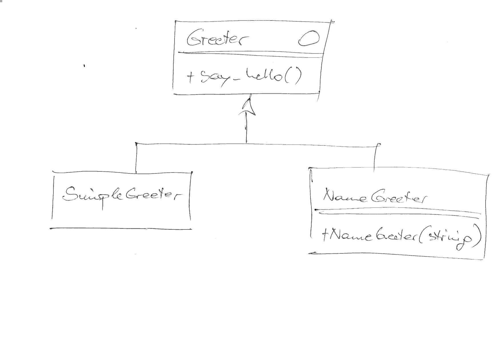

C++, Debug/Release, CMake “Programming”, Rants¶
Pause¶
Give trainer time to switch project to C++
Class Diagram¶
{kind=link}
C++ Standard Version¶
SET(CMAKE_CXX_STANDARD 23)
$ make VERBOSE=1
... /usr/bin/c++ -std=gnu++23 ...
Debug Vs. Release Builds: CMAKE_BUILD_TYPE¶
Debug$ cmake -DCMAKE_BUILD_TYPE=Debug /home/jfasch/work/jfasch-home/trainings/material/soup/cmake/09-c++/ $ make VERBOSE=1 ... /usr/bin/c++ -O3 -DNDEBUG ...
(Looks pretty arbitrary and half-hearted)
Release$ cmake -DCMAKE_BUILD_TYPE=Release /home/jfasch/work/jfasch-home/trainings/material/soup/cmake/09-c++/ $ make VERBOSE=1 ... /usr/bin/c++ -O3 -DNDEBUG ...
(Looks pretty arbitrary and half-hearted)
Compiler Type¶
Compiler flags chosen half-heartely by CMake
⟶ custom flags needed
E.g. for “Debug”, but only if GCC
Optimization off (
-O0), to improve single-stepping experienceBetter debug info (
-g3)More warnings (
-Wall) for sanityTurn warnings into errors (
-Werror) for sanity
IF (${CMAKE_BUILD_TYPE} STREQUAL Debug)
IF (${CMAKE_C_COMPILER_ID} STREQUAL GNU)
SET(CMAKE_C_FLAGS "${CMAKE_C_FLAGS} -O0 -g3 -Wall -Werror")
ENDIF()
IF (${CMAKE_CXX_COMPILER_ID} STREQUAL GNU)
SET(CMAKE_CXX_FLAGS "${CMAKE_CXX_FLAGS} -O0 -g3 -Wall -Werror")
ENDIF()
ENDIF()
Strings And Lists¶
CMake’s “language” has no type system
Strings can be compared numerically or lexically ⟶ no errors, just bugs
Lists are strings that contain semicolon separated values
⟶ CMake commands to manipulate strings and lists
IF (${CMAKE_BUILD_TYPE} STREQUAL Debug)
MESSAGE(DEBUG "Oida! Debug Build!!")
IF (${CMAKE_C_COMPILER_ID} STREQUAL GNU)
STRING(APPEND CMAKE_C_FLAGS "-O0 -g3 -Wall -Werror")
ENDIF()
IF (${CMAKE_CXX_COMPILER_ID} STREQUAL GNU)
STRING(APPEND CMAKE_CXX_FLAGS "-O0 -g3 -Wall -Werror")
ENDIF()
ENDIF()
Show
MESSAGE()usage …
$ cmake --log-level=Debug -DCMAKE_BUILD_TYPE=Debug /home/jfasch/work/jfasch-home/trainings/material/soup/cmake/09-c++/
-- Oida! Debug Build!!
...
MESSAGE() (A.k.a printf() Debugging)¶
Basic usage
MESSAGE("Howdy")is the same as
MESSAGE(NOTICE "Howdy")is the same as
MESSAGE(Howdy) # <--- root of all evil (one of roots)
⟶ all sorts of … crap:
Tags? Enums? No!
MESSAGE(WARNING "Howdy")Prints, as expected …
CMake Warning at CMakeLists.txt:5 (MESSAGE): Howdy
MESSAGE(BULLSHIT "Howdy")Prints …
$ cmake ~/work/jfasch-home/trainings/material/soup/cmake/code/ BULLSHITHowdy
MESSAGE(): Popular “Modes”¶
Mode |
Description |
|---|---|
|
CMake Error, stop processing and generation. |
|
CMake Error, continue processing, but skip generation. |
|
CMake Warning, continue processing. |
(none) or |
Important message printed to stderr to attract user’s attention. |
|
The main interesting messages that project users might be interested in. Ideally these should be concise, no more than a single line, but still informative. |
|
Detailed informational messages intended for project users. These messages should provide additional details that won’t be of interest in most cases, but which may be useful to those building the project when they want deeper insight into what’s happening. |
|
Detailed informational messages intended for developers working on the project itself as opposed to users who just want to build it. These messages will not typically be of interest to other users building the project and will often be closely related to internal implementation details. |
|
Fine-grained messages with very low-level implementation details. Messages using this log level would normally only be temporary and would expect to be removed before releasing the project, packaging up the files, etc. |
$ cmake --help
...
--log-level=<ERROR|WARNING|NOTICE|STATUS|VERBOSE|DEBUG|TRACE>
...
Attention
All of this lacks a clear definition. Apparently …
Ordering appears to be
ERROR > WARNING > NOTICE > STATUS > VERBOSE > DEBUG > TRACESTATUSis the default “level”